|
北京一周（2008年7月）
2008年7月底我在北京呆了一周，最多的一天赶了三个饭局，也没拍多少照片。现上一些图片向大家汇报。
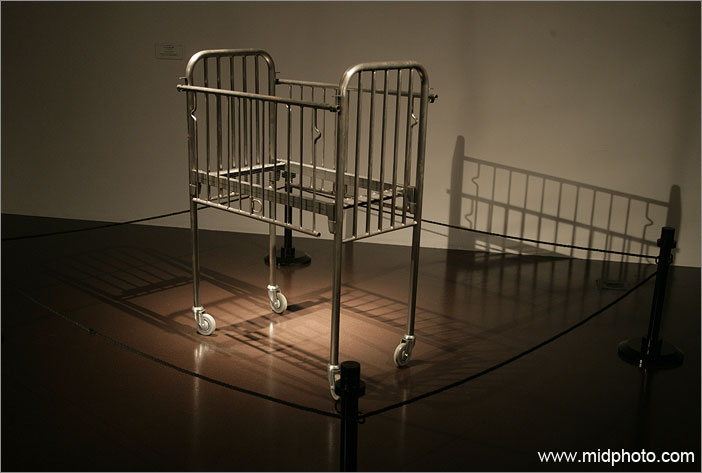
2007年4月我参观了首都博物馆和英国大使馆文化处联合举办的英国现代艺术展。很多展品让人目瞪口呆，上面这个钢制婴儿车就是作品之一，我怎么也没看明白是什么意思。貌似说明一种人世间被隔离的感觉。如果说这就是所谓的装置艺术，我把超市手推车弄到美术馆来是否也很艺术？
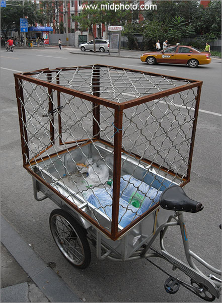
北京西单街头送水车。这个是否比上面那个钢制婴儿车更艺术？
我已经被艺术搞晕。
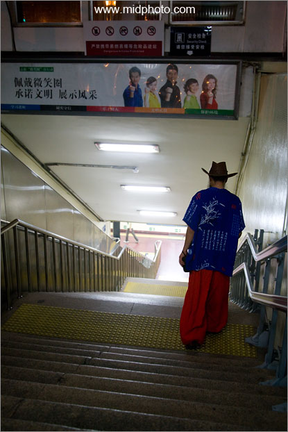
前门地铁站某进站乘客
天安门广场晚上8点不到就清场了，游客都被赶了出来。以前天安门广场是可以随便逗留的，2007变成晚上9点半后戒严。今年晚上8点就戒严。广场上警车的高音喇叭不停地喊话，四处密布警犬、军人、警察、便衣和城管，让人感觉很压抑。进入广场的所有路口都有和机场一样的安检，我背的摄影包理所当然被翻了个底朝天。一个游览之处气氛变得一年比一年紧张，这是社会矛盾日益严重的表现。和谐社会要靠如此高压才能实现，这种高压气球哪天一旦爆了就会引发严重社会动乱。
我在广场被警察四处驱赶，绕场一大圈才来到前门地铁，累得像狗一样,正坐在台阶上休息，忽然一个衣着怪异的人走过，赶紧拍了一张。
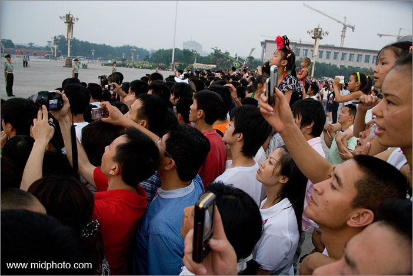
2008年7月23日的天安门广场降旗仪式
我搞不懂把一面国旗收起来有什么好看，值得如此毫无秩序的狂挤。我在后面怎么也进不去，把相机举在头顶上拍了这张。
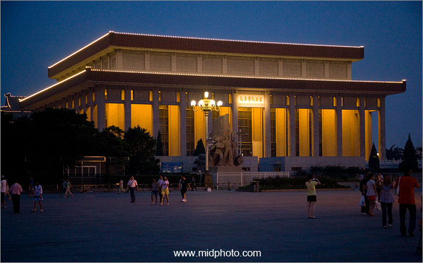
天安门广场毛主席纪念堂
我是非常反对一个人死后还要在人间占据这么大一片地。这个纪念堂在建筑上毫无独到之处，不土不洋，突兀地耸立在明清建筑群之中（天安门和前门之间），实在不雅。
经常在乡下看到一片良田里突然冒出的墓地，中国人这种习惯实在不好。
1980意大利记者奥琳埃娜·法拉奇在采访当时任国务院副总理的邓小平时，专门谈到毛主席纪念堂的事。邓小平说：“粉碎‘四人帮’后，建毛主席纪念堂，应该说，那是违反毛主席自己的意愿的。50年代，毛主席提议所有的人身后都火化，只留骨灰，不留遗体，并且不建
墓坊。毛主席是签了名的。我们都签了名。现在签名册还在。粉碎‘四人帮’以后做的这些事，都是从为了求得比较稳定这么一个思想来考虑的。”
邓小平说：“我不赞成把它（毛主席纪念堂）改掉。已经有了的把它改变，就不见得妥当。建是不妥当的，如果改变，人们要议论纷纷。现在世界上都在猜测我们要毁掉纪念堂。我们没有这个想法。”
中国领导人有四处留字的传统，但很多人可能没注意到毛主席纪念堂这六个字是天安门（也许北京）唯一的华国锋手迹。毛主席曾经挑选刘少奇和林彪为他的接班人，但下场都很惨，不是自己主动整死接班人就是差点被自己的接班人整死。1976年毛泽东在弥留之际已经不相信任何人，既不选四人帮成员（张春桥）也不选老革命代表（邓小平）为接班人，而是指定了华国锋这个阿斗。但年轻的华国锋在北京政坛以及军方都毫无背景，立足未稳，所以他需要一个毛主席纪念堂（以及你办事我放心，以及两个凡是）来做镇堂木。现在两个凡是已成笑柄，大多数80后年轻人都已不知道华国锋是何方神圣，毛主席纪念堂也应该完成他的历史使命了。
台湾有中正纪念堂，美国有华盛顿纪念塔和林肯纪念堂，但那里面都没有遗体只有塑像，只有社会主义国家才喜欢保存木乃伊。苏联首先把列宁的遗体保存在红场上，然后有毛主席，越南的胡志明，朝鲜的金日成。我是从来不赞成竖碑立传来纪念某人的。强行立碑自我陶醉，过不了多少年就会没人理，竖一百个碑都白搭。真正要流芳千古不能靠立碑，只能靠精神上的东西。
前苏联灭亡后，列宁格勒恢复了沙俄时的旧称圣彼得堡，列宁的各种塑像也被拆毁，不能拆的铜像则被回炉。关于列宁遗体是否应该继续保留，俄罗斯国内也展开了激烈争论。毛主席纪念堂的去留也迟早会再提上议事日程。天安门前中华人民共和国万岁的巨幅标语只是表达了一个良好的愿望，中国还没有哪个朝代能坐稳江山四百年，一个政权是绝对不可能万岁的。历史的规则告诉我们，土地还会是这片土地，但政权会更替，与其让后来坐江山的非共产党政权来拆去以前的纪念堂，还不如现在自己有体面的找个理由拆了它。台湾对待蒋介石，俄罗斯对待列宁，以后的中国对待毛主席，我看最后都将是一个结果，拆除是迟早的事。
邓小平和中国共产党对毛泽东早有定论，那就是功过三七开。但“过”这里应该解释为错误还是犯罪？我始终认为毛主席对中国1960-1962饿死上千万的饥荒、1966-1976批斗和武斗死亡数百万的文化大革命负有直接责任，他是总策划者，不能简单的用严重错误四个字来搪塞，也不能因为他有建国之功而不追究责任。毛主席本人在1952年曾亲自批准枪毙刘青山张子善，说不能因为他们为革命立过功就原谅他们的罪行，但对毛泽东本人，我们应该如何处理？四人帮（文化大革命的帮凶）被判死缓和无期徒刑，那文革的策划者毛泽东是否应该被判处死刑？不过人都已经死了，也无法再追究现实的责任，鞭尸我认为是中国历史的不良习俗，但毛主席纪念堂的建造既然违背了主席本人的遗愿，我看主席的遗体还是火化了的好，骨灰撒向大海或运回老家韶山安葬也符合中华民族入土为安的传统。
我觉得北京的空气质量不好以及天安门广场比较压抑最大的原因之一就是缺少绿色植物，毛主席纪念堂拆了之后应该改建为公园绿地，让市民多一个绿色休闲之处，纽约的中央公园值得仿效。
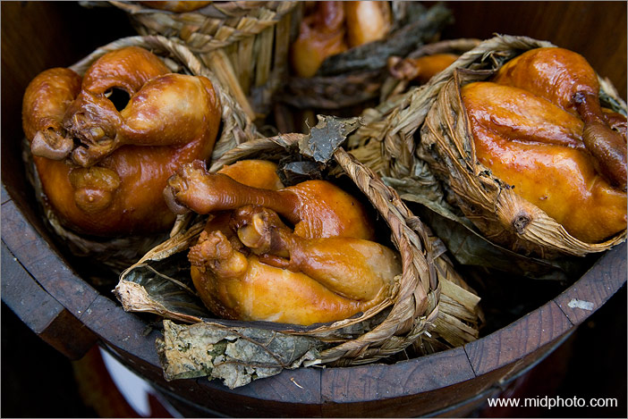
宣武区长椿街校场口胡同路边烧鸡
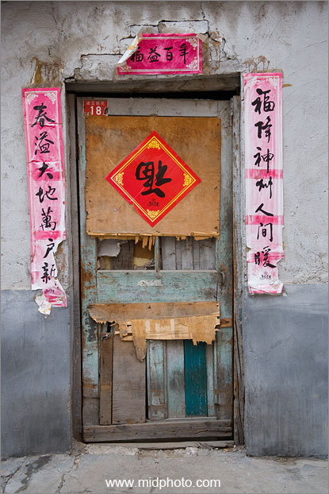
福到人间。宣武区校场口胡同
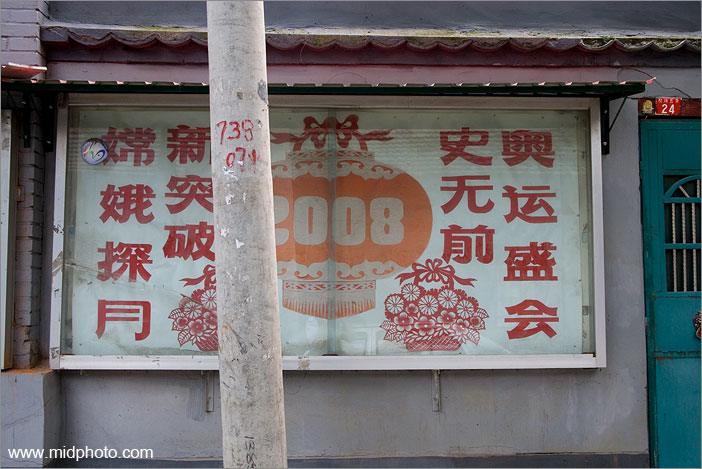
史无前例新突破。宣武区校场口胡同。这种街道土生标语比较生猛。
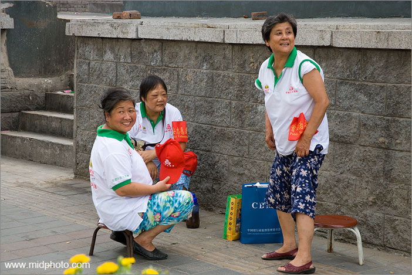
奥运临近，北京街头满是戴着红袖箍的大爷大妈们（治安志愿者）。我想要是坏人都能被大妈们逮着，那坏人得是多大年纪？
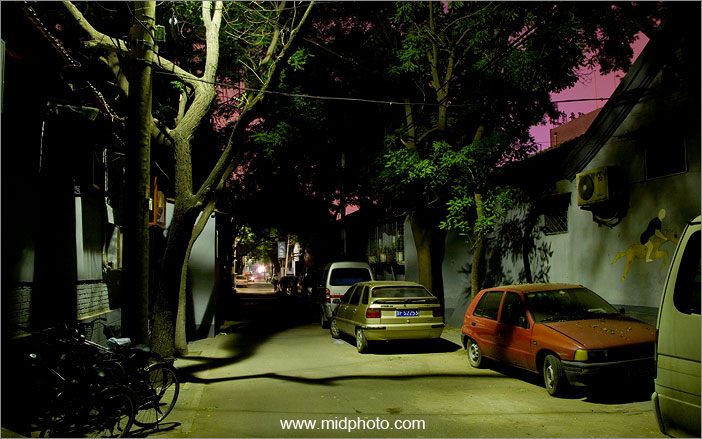
宣武区校场口胡同的深夜
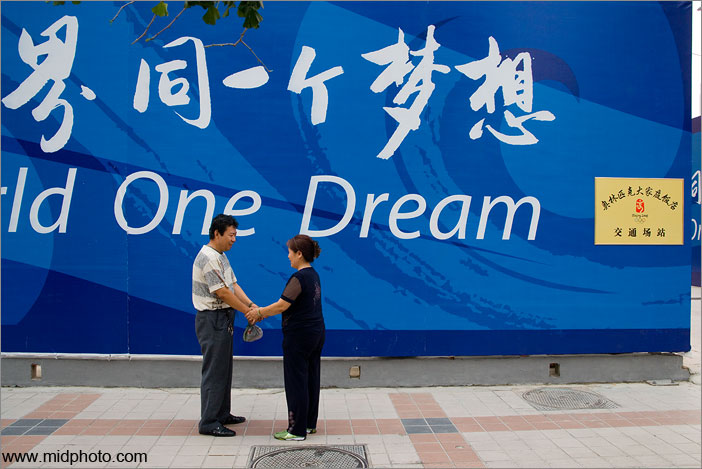
同一个梦想。王府井街头。
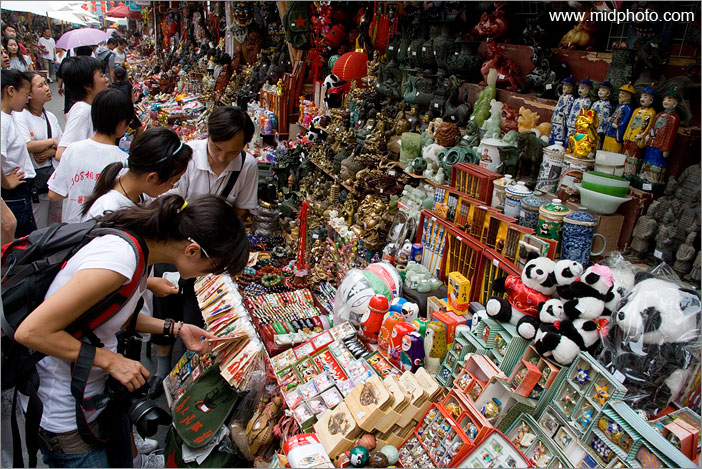
王府井小吃街的纪念品。全中国旅游点都卖一样的东西。
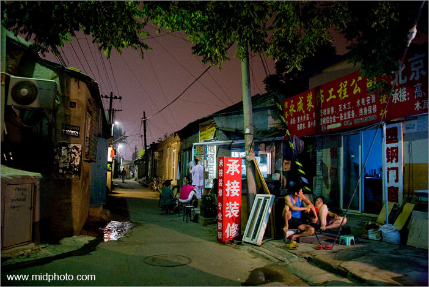
宣武区校场口胡同的深夜
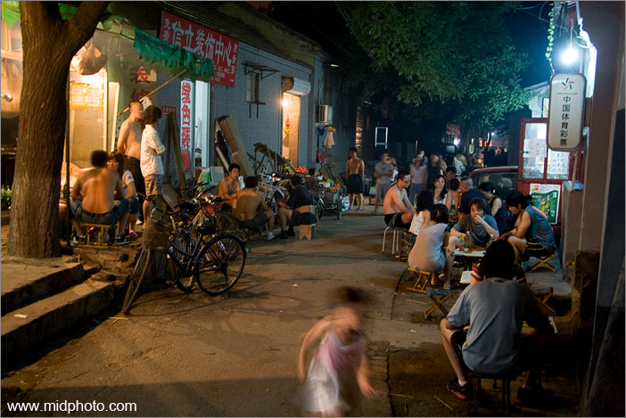
宣武区校场口胡同的深夜。此处烧烤曝好吃又便宜。我在这里喝醉了。
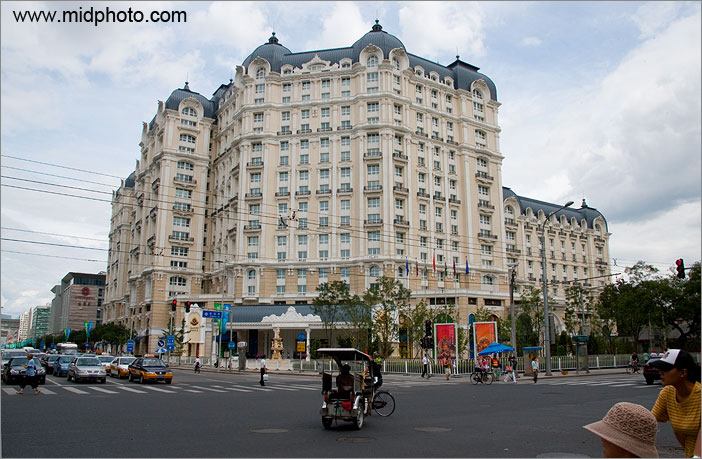
东城区励骏酒店（Legendale Hotel）建筑颇有特色
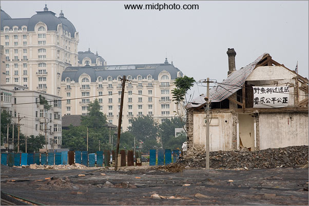
要求公正公平。励骏酒店对面的小巷。拆迁总是会有一些分歧
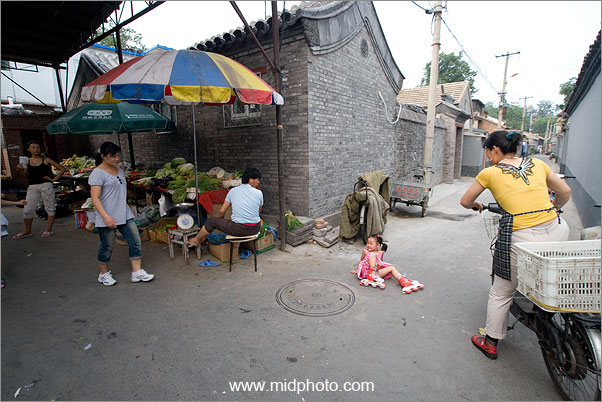
胡同小车祸
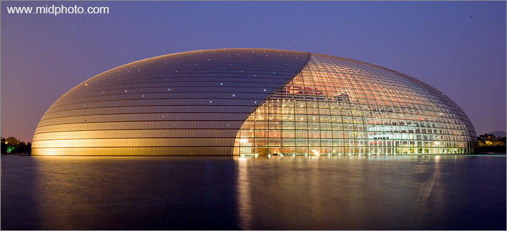
巨大鸟蛋 - 国家大剧院，national centre for
performing arts. 左侧的光线来自旁边的人民大会堂
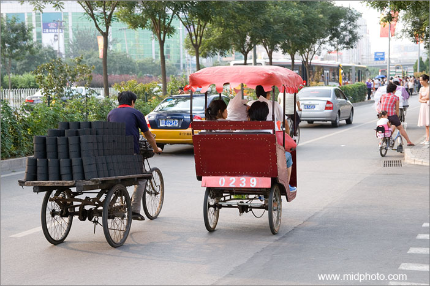
三十年前（late 1970s/early
1980s），当北京第一次对外国记者开放时，冬天整个北京的空气被描述成弥漫着刺鼻的蜂窝煤燃烧后的二氧化硫青烟。虽然2008奥运会来了，但今天的北京胡同里依然在使用蜂窝煤。北京胡同和上海里弄一样大多数房间都没有厕所（使用街口的公共厕所），恐怖的卫生死角也很多。我认为胡同及四合院留下几个著名的给游客参观就行了，其他的应该尽早拆除干净。北京面临巨大的人口压力，平房太浪费居住空间了。也只有胡同被拆完，蜂窝煤才能最后完成它的历史使命。
1997到2007十年之间北京已经从自行车王国（800万辆自行车）变成了汽车王国（350万辆汽车）。但人力三轮车依然是一种生活方式。蹬三轮的每月要给街道办事处交500元管理费，三轮车也是统一购买，每辆1900元。车夫们平均一个月大月挣2000多元。
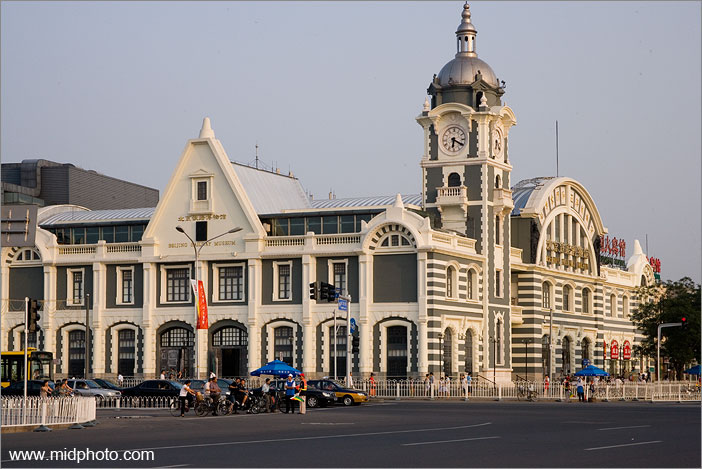
前门附近的原清朝末年京汉铁路老北京火车站，正在被改建为北京铁路博物馆
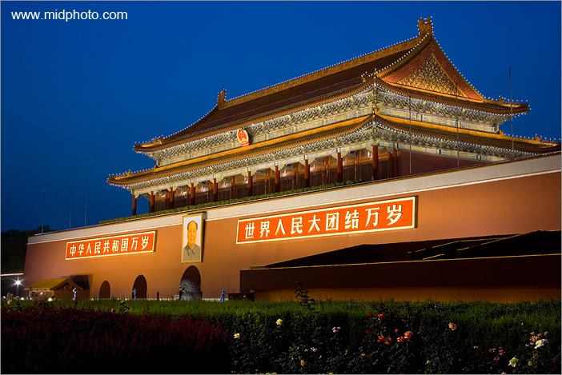
天安门侧面标准像
第一部分完，请点击这里看第二部分图片
|